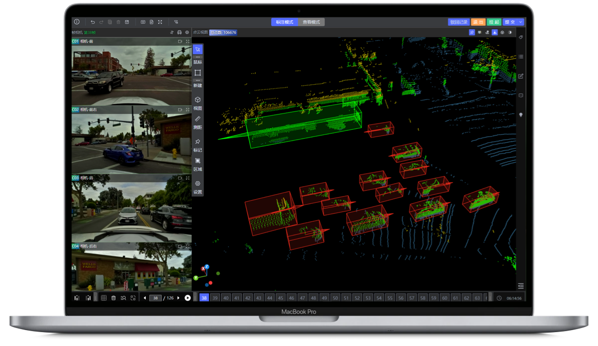
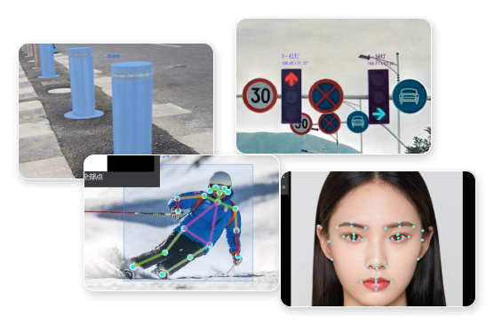
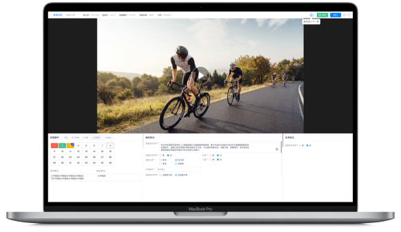

全数据类型的标注，涵盖文本、语音、图像视频、点云、3D / 4D 等标注类型，可根据用户需求提供场景化数据标注解决方案
将海量的语音数据进行逐字标注，并根据不同的任务需求，对情感、语气、说话者等进行多维度的标记。
多维度获取信息，高精度标注，精确地描述物体在三维空间中的位置、形状、大小以及随时间的变化情况。

精确捕捉三维空间中物体的形状、结构和细节，适应多种复杂环境，为机器学习模型提供高精度的三维数据。
准确标出图片中的关键对象、区域和属性，为机器学习模型提供丰富的视觉信息。


提取视频中的关键信息，捕捉视频中的动态变化，为计算机视觉和机器学习算法提供丰富的数据支持。
助力机器学习更好地识别文本中的意图或情感，增强机器对自然语言的理解能力。
通过人机融合的工作流数据标注方案，定制化解决您的场景化数据标注需求
标注平台支持多款数据标注工具组件，通过配置选择可实现全类型数据的标注，有效满足复杂多样的数据标注需求
标贝科技 AI 数据平台集成丰富标注工具、智能预标注模型及项目管理功能于一体，支持语音、图像、视频、点云、4D、多模态、大模型等百余种标注场景。以高可用、高可靠、高安全为核心，满足大规模、多行业、多场景、多模态等细分领域数据需求。
了解更多在全国自建多个数据中心，拥有众多稳定的外包合作供应商与众包资源，专属项目经理全程多维度管控，确保数据交付质量。
具备数百个大型项目落地经验，积累跨行业领域的项目能力，覆盖智能驾驶、金融、医疗等领域，及时响应复杂项目需求。
多项专业机构认证的 ISO 质量管理与信息安全认证，完善的项目管理流程及数据安全防护体系，确保数据生产和交付安全。
基于行业领先的算法能力，自研一站式 AI 标注平台，支持语音、文本、图像、视频、点云等全类型数据的主流标注场景。
依托定制化专项服务方案与人机协同项目运行方式，助力数据释放更多应用潜能
明确标注规范、数据类型与验收标准
scope.json制定标注规则、试标校准与样例集
rule.spec自研模型自动预标，压缩重复劳动
preanno.ai分领域认证标注员精修与复杂判断
label.run交叉质检 + 客户验收 + 加密交付
deliver.tar